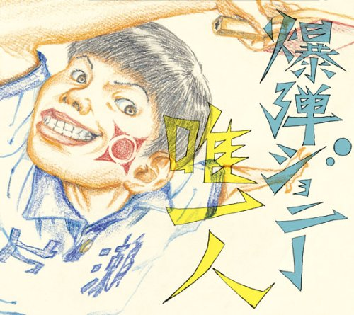

Day 35

爆弾ジョニー ◆ 唯一人 ◆ 2014
乒乓的 OP，很喧闹。这首歌很贴近本站主题呢，可喜可贺。乒乓可真好看，主要讲的并不是乒乓，而是青春和人生啊。
新しい時代が来たのに
煮詰まって抜け出せない
この道が真っ直ぐ過ぎて
逃げれもしない
選ぶにも道がなくて
迷走中
何がしたいかひとりわからなくて
妄想中
自分と他人を比べて堕ちて行く
君は世界にたった一人だよ
僕は世界にたった一人だよ
ねえ、そうでしょ？
君にしかできないことなんて
ないかもしれないけど
何もしないまま消えてゆくのかい〜
「僕だって誰だって気持ちイイことがしたいだけえ！」
君のその白いとこに全部
持ってかれても
君のその黒いとこに全部
捧げたい
選ぶにも道がなくて
迷走中
何がしたいかひとりわからなくて
妄想中
自分と他人を比べて堕ちて行く
オイラ世界にたった一人だよ
いつも世界にたった一人だよ
でもやるのだーの
オレにしかできないことなんて
ないかもしれないけど
何もしないまま消えてゆくの
何もしないまま消えてゆくの
何もしないまま消えてゆくもんか〜
「何だって何時だって気持ちイイことがしたいだけ〜！」